Setup Watson Studio
In this exercise you will setup and configure Watson Studio to use the Health and Predict notebook templates. The templates can be used for detecting anomalies and predicting asset failures of assets and for other purposes using Health and Predict - Utilities.
- Get URL and User credentials to access Watson Studio.
- Create a project and add the setup notebook to your project in Watson Studio.
- Setup Database Connection to allow Watson Studio to access DB.
- Get URL to Download the Healh and Predict Notebooks.
- Create am environment to edit and run your notebooks.
- Add Notebook From File to Watson Studio Project.
- Download the Predict pmlib Python Library Documentation used for working with Predict algorithms and automating device and data tasks in Monitor.
Get URL and User credentials to access Watson Studio
Ask your Maximo Application Suite administrator to get your user name and password for Watson Studio, API keys and URL that you will use to connect to Watson Studio. You or he can use these steps to get them.
-
To get the Watson Studio URL, login to Maximo Application Suite. Click on
Adminstration
-
Click on
ConfigurationsandWatson Studio
-
Click on
SystemAfter you create the Watson Studio User be sure to make note of the URL, user name and password. You will use it to login to Cloud Pak for Data later with it.
-
Open a browser to the URL and use the credentials from the previous steps to login to Cloud Pak for Data. After logging in you see your Watson Studio Overview page. 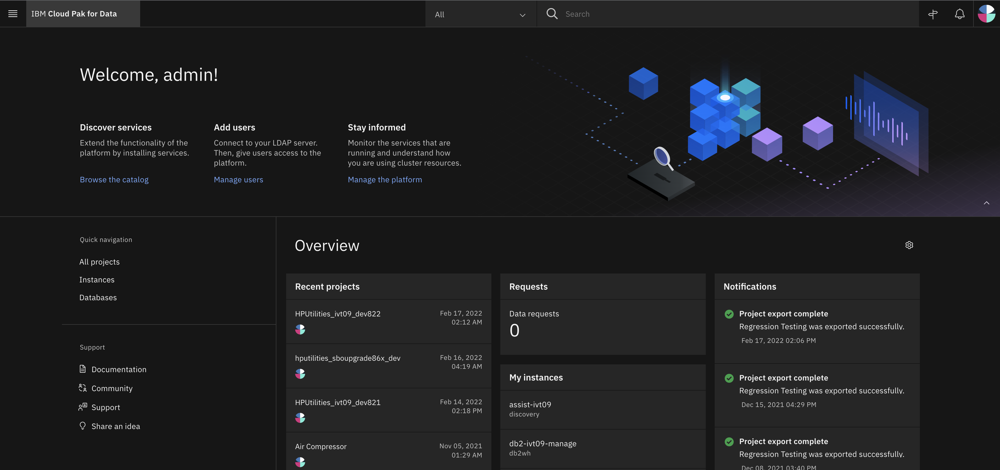
Note
Ensure Datascience User Belongs to Predict Security Group. In Maximo Manage, add the user to the PREDICT and PREDICTGROUPING group in the user definition as shown in the screen below.

Create a Project in Watson Studio
Watson Studio projects are where you: - Keep your model templates - Data Assets - Train deploy and many the Models - Create and manage environment for training and deploying your models.
Create a project so that you can add and setup Health, Predict and Utilities notebooks using Watson Studio.
-
Click on 'All Projects' where you will then create a new project.

-
Click 'New Project'. 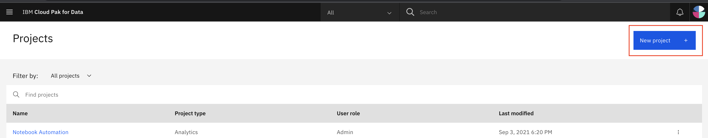
-
Accept default and click 'Next'.

-
Click 'New Empty Project'.

-
Enter a project name and description. 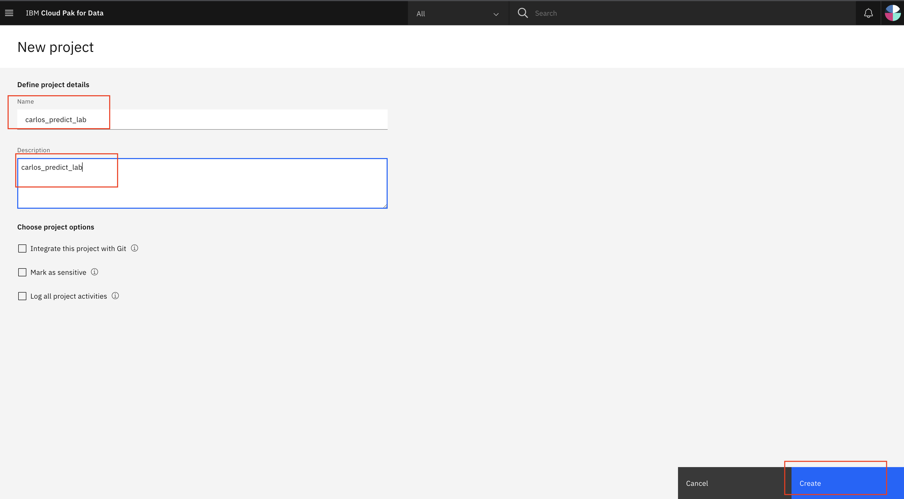
-
Click
Add to Project. 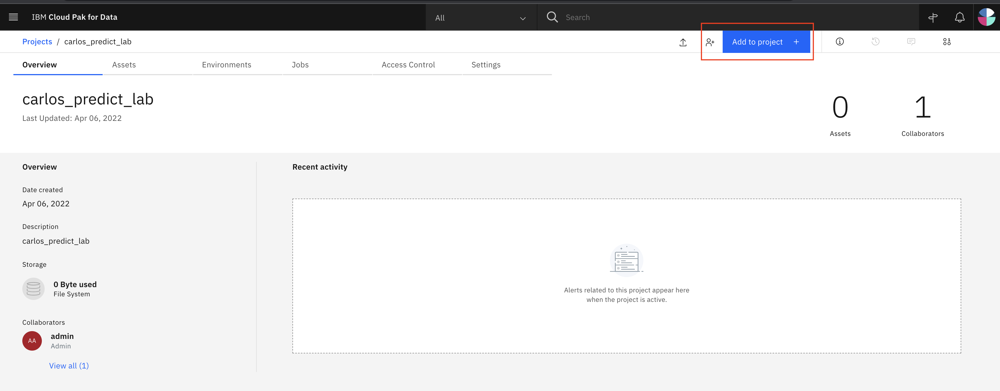
This is how you will add the Predict notebook templates to your project that you download later in this exercise.
Setup Database Connection in Watson Studio
Setup database security to allow Watson Studio to access the Maximo Application Suite databases.
-
Follow the instructions in the documentation to download the database security certificate file Database PEM file If your database was deployed within CP4D use the directions below.
-
Open a separate browser window and login to Cloud Pak For Data Console to get the database pem file. Click on the
Hamburgermenu,InstancesSelect the database name used by Maximo Monitor. The database name should includeIOTin the name. 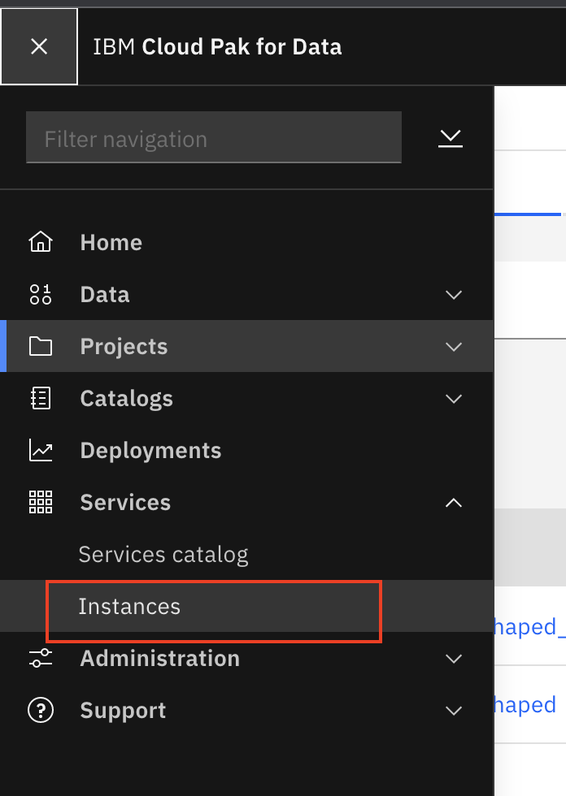 -
Click on
Consoleto download the database pem file. If you receive an error saying the console hasn't been provisioned ask your IT Administrator to install it. 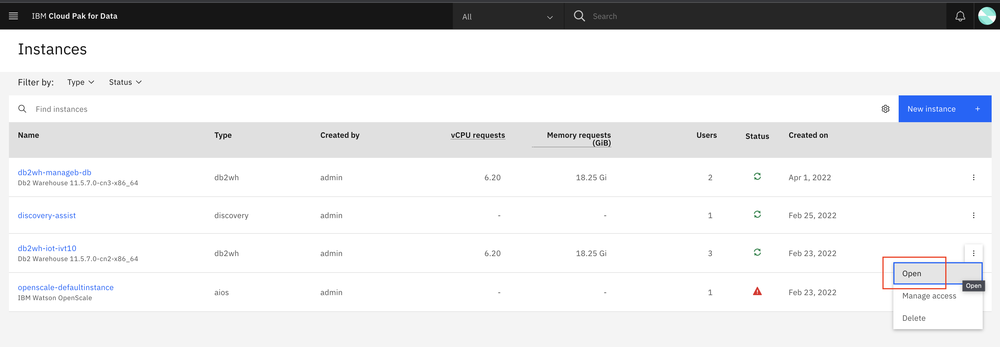 -
Click on the
Download SSL Certificate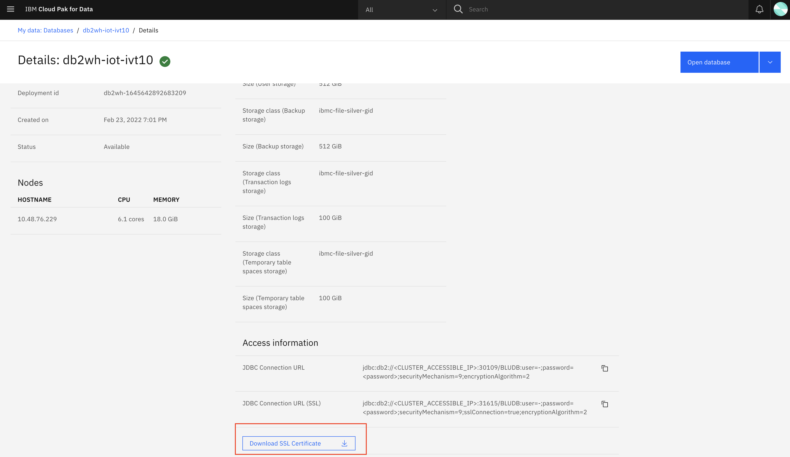 -
Return to the browser window that has Watson Studio Project you created earlier. Add the database pem file as a data asset. Drag and drop the database pem file into the data assets. 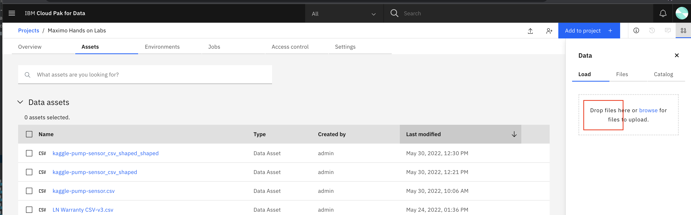
!!! If your database was deployed outside of CP4D you will have to use the directions below.
-
Login to Openshift Cluster.
-
Select
Project db2u, selectworkloads, selectSecrets, search fordb2u-certificate. Select it. InDetailstabDatasection chooseca.crtcopy certificate. Save it in a text based file named database.pem on your location machine. You will upload this file to CP4D Watson Studio project later as a data asset.
Get URL to Download the Health and Predict and Utilities Notebooks
These notebooks templates are what you use to calculate asset health and risk scores, asset end of life probability, anomaly detection, predict EOL failure dates and more.
The Health and Predict notebooks require programmatic access and credentials to access Maximo Application Suite. You will need these values to create the URL that allows you to download the Health, Predict and Utilities notebooks zip file. The URL looks like:
https://`EXTERNAL_APM_API_BASEURL`/ibm/pmi/service/rest/ds/`APM_ID`/`APM_API_KEY`/file/download
| Environment Variable | Find It In | Used For |
|---|---|---|
| APM_ID | The value for the mxe.PMIId system property. | Used to train and score all notebooks |
| APM_API_BASEURL | The root of the URL value for the PREDICTAPI endpoint. | Used to train and score all notebooks |
| EXTERNAL_APM_API_BASEURL | The route location for the Predict project retrieved from the Red Hat® OpenShift® Container Platform. | Used to download the notebooks |
| APM_API_KEY | The API key from MAS Integration Application to programatically access Predict APIs. | Used to download and use the notebooks |
Get mxe.PMIId value used for APM_ID
-
To get the value of mxe.PMIId, open a browser and access the Health and Predict application. See below example of where you can find these values in Health and Predict system properties. Click on
Application Administration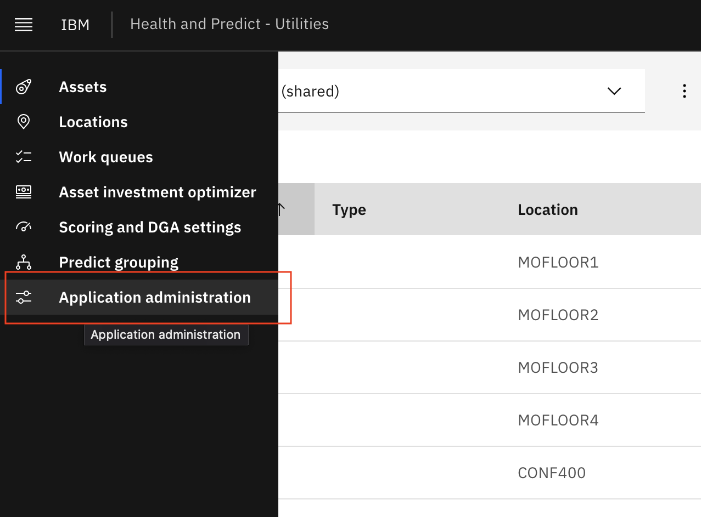 -
Click on
System Configurations,Platform ConfigurationsandSystem Properties. Click onFunnelicon to filter properties that begin withproperty namePMI. 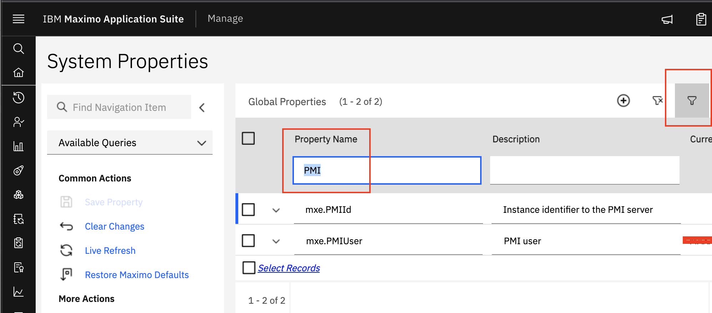
It should look like:
APM_ID = mxe.PMIId = f3fake48
Get PREDICTAPI endpoint used for APM_API_BASEURL
-
To get
APM_API_BASEURLfrom the value fromPREDICTAPI endpoint. You can findendpointsin Health and Predict Adminstration application by searching onEnd Points. Click onApplication Administration -
Click in search field and search application for
End Points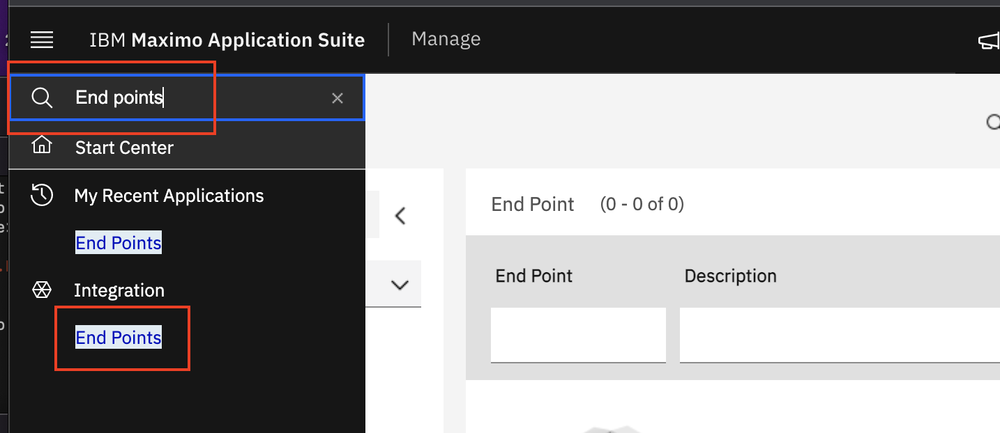 -
Note the URL for the
PREDICTAPIendpoint. 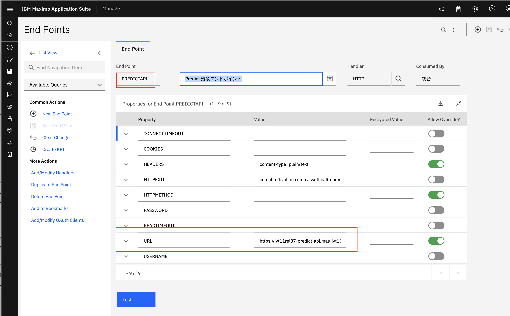 -
It should look like:
APM_API_BASEURL = PREDICTAPI endpoint = https://main.predict.ivt11rel87.ivt.suite.maximo.com
Get root location for the EXTERNAL_APM_API_BASEURL
-
Open a browser and access the Openshift Console MAS is deployed on. For IBM Cloud deployments goto
https://cloud.ibm.com, select youraccountfrom the drop down menu and clickClusters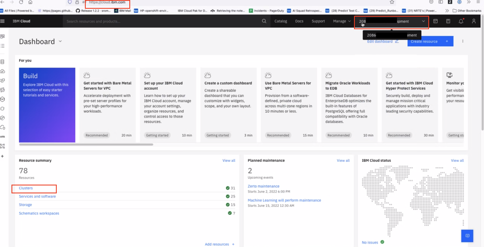 -
Under
Resourcesclick on your cluster resource. 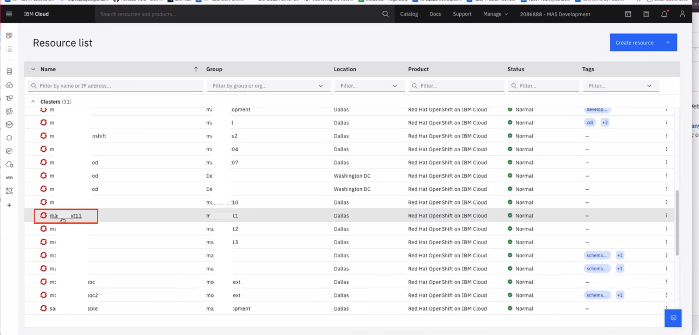 -
Click on
Openshift Web Console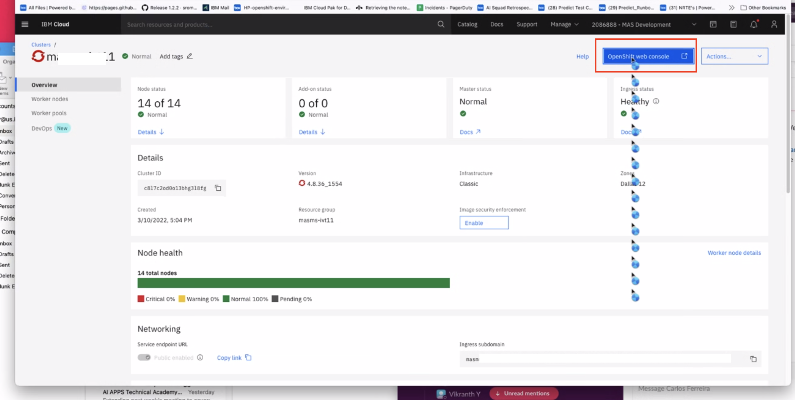 -
Click on
Project. Search onPredictand Click onProject -
Search
Predict -
Navigate to
Routes -
Search for
masdev-masdemo-predict-apiTheURLshould be under the location tab and look similar as the one below.https://masdev.predict.devtest.hpdevcloud-6xxxxxxxxxxxxxx91ab-0000.us-south.containers.appdomain.cloud/ibm/pmi/service
-
Trim the URL end to get the
APM_API_BASEURLby removing/ibm/pmi/service.
It should look like:
EXTERNAL_APM_API_BASEURL = https://masdev.predict.devtest.hpdevcloud-6xxxxxxxxxxxxxe91ab-0000.us-south.containers.appdomain.cloud
Get APM_API_KEY
API keys are used by the notebooks to make program calls to the Health and Predict APIs. API keys are created for specific users or programs using the Administration tools.
1. In Health and Predict and Utilities menus on the left, click on Application Administration to open the Start Center
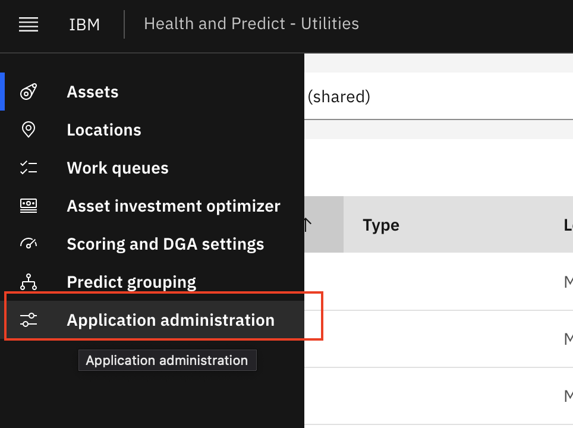
-
Click
Administrationand sub menuAdministration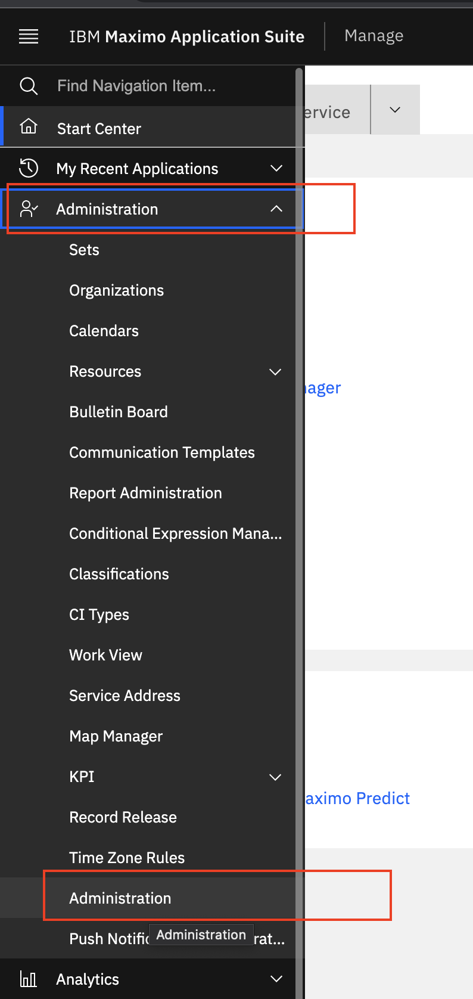 -
Click on
Integrationmenu to access theStart Centerwhere you can create keys. 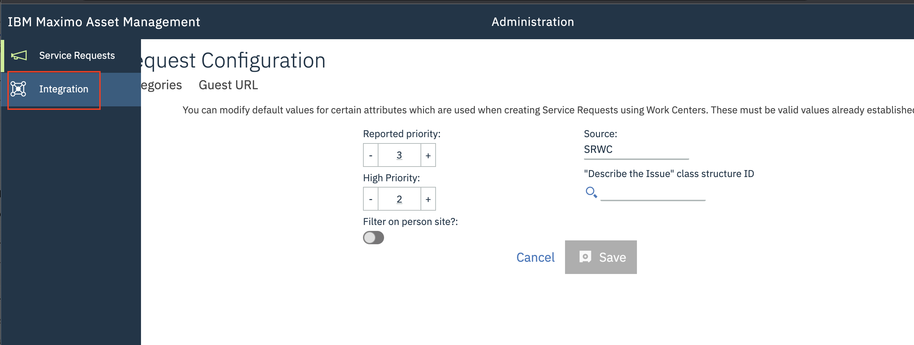 -
Click on
API Keysmenu and theAdd API Keybutton to create an API keys or select an API key from those available. 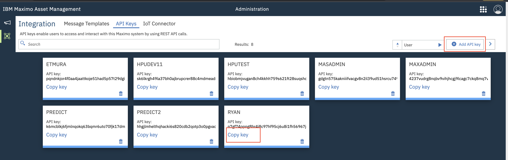 -
Click
Copy keyto getAPM_API_KEYstring you need to create the URL to download the zip file of Predict Notebooks.
Download the model template notebooks
Using the key value pairs in the previous steps you wil create the URL to download the Predict notebooks from a browser.
Replace key variable you collected in the previous steps with the values to create the download URL:
For example:
https://`EXTERNAL_APM_API_BASEURL`/ibm/pmi/service/rest/ds/`APM_ID`/`APM_API_KEY`/file/download
EXTERNAL_APM_API_BASEURL = https://masws.predict.ivt09rel86.fake.suite.maximo.com
APM_ID = f3fake48
APM_API_KEY = n7gssk_fake_l_fake_486_fake_967_fake_jm8
The final URL becomes:
https://masws.predict.ivt09rel86.fake.suite.maximo.com/ibm/pmi/service/rest/ds/f3fake48/n7gssk_fake_l_fake_486_fake_967_fake_jm8/file/download
-
Make note of the values and create the URL you can use in the browser to download the zip file. Here is an example download URL for Predict model notebook templates zip file using the values from the previous steps.
-
Open a browser and use the URL to download and save the Predict Model templates zip file locally.
-
Unzip the models file and then upload the notebooks one at a time into your Watson Studio Project Assets. In your finder or file explorer, double click on the zip file to extract the notebooks. Make note of where you unzipped the file, as you will need it for the next steps.
Note
Be sure to prepend your name initials to any model you upload to shared project areas when doing labs so you can remember which project notebook template was yours.
Set up an Environment to train and test your models in Watson Studio
The default environment is only 1 vCPU. You must have an environment with at least 4 vCPUs in order to train the Predict Models.
-
In your Watson Studio project, create a 4 vCPU environment by clicking on
environmentand clicking theNew enviornment definitionlink.
-
Enter a name for the environment. Hit the plus button to increase the vCPUs to 4. Choose Python v3.8 for the
Software version. Press the 'Create' button to create then environment.
Add Notebook From File to a Watson Studio Project
You can use the steps below to add any notebook from File to your Watson Studio Project. Notebooks are used to create scores, predictions and for other algorithms in Health and Predict - Utilities. In this exercise you will add a Predict Notebooks you will use to your Project. Select the WS - Predicted Failure Date-Survive Analysis.ipynb notebook template that you will use in the next exercise to predict failure dates of the pump.
-
Add a Predict notebook by file option to your Watson Studio Project. Return to your Cloud Pak for Data project. Search for your
projectby name. Click on theproject namelink to open your project.
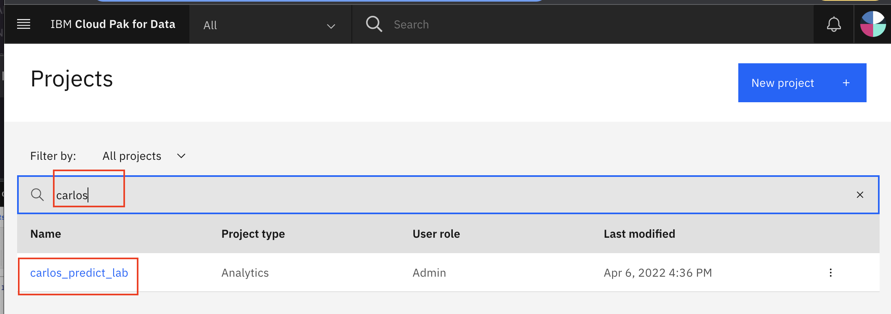 -
Add one of Predict notebook you unzipped earlier. Click
Add to Projectand selectnotebookoption. 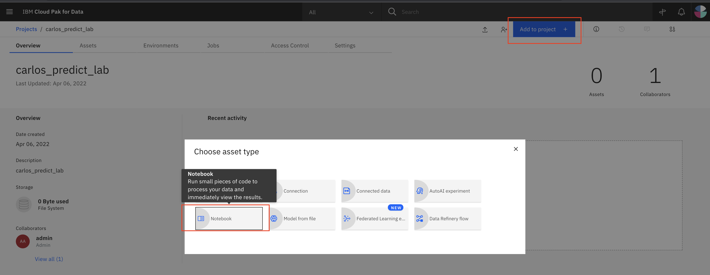 -
Click the
From Filetab. Drag and drop the notebook you would like to add to the area to add notebooks. To save time in the next exercise choose the notebook forWS - Predicted Failure Date-Survive AnalysisreplaceWSwith your initials when naming the notebook. 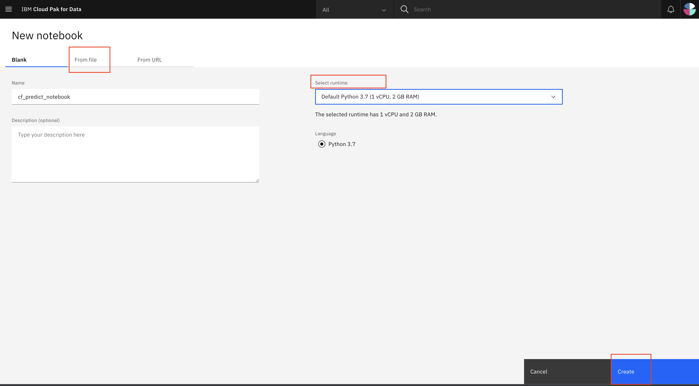 -
Prepend your name initials to the name of the model file template you uploaded. Select the runtime environment you created in the previous step that has 4 vCPUs. Drag and drop your notebook template file into the area indicated below. Click on the
Createbutton to create the notebook. 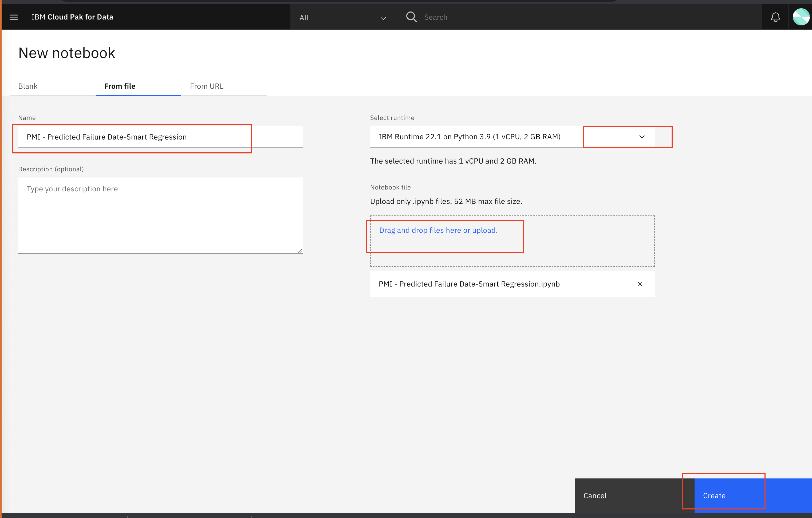 -
Confirm that you see 4 vCPUs for the notebook as it starts. 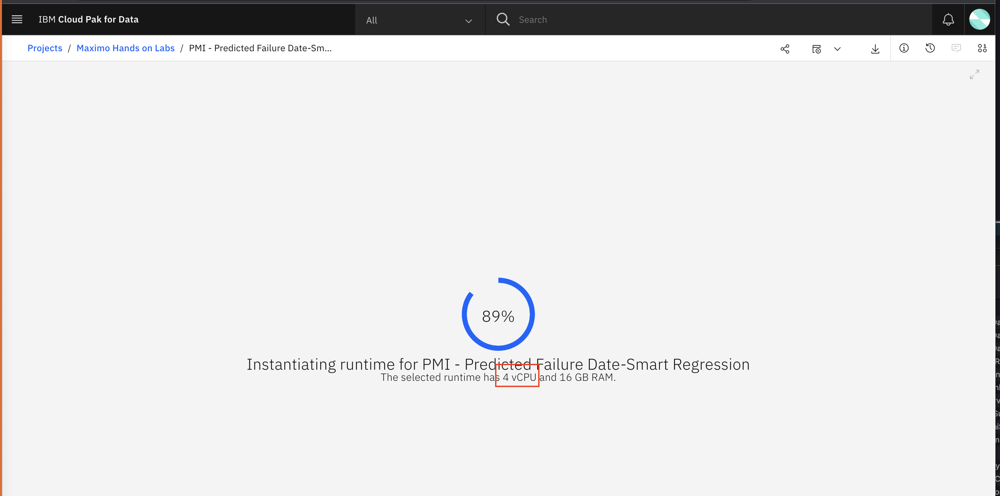
-
If the notebook has the wrong number of vCPUs you can change the environment by clicking on the 'information' icon and selecting the right
Environmentfrom the dropdown select box. 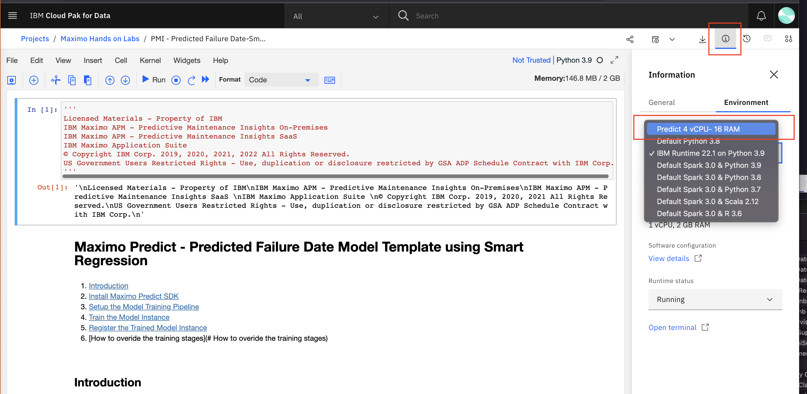 -
If you had to change the
environment, click theConfirmbutton to restart the notebook editor in Waston Studio 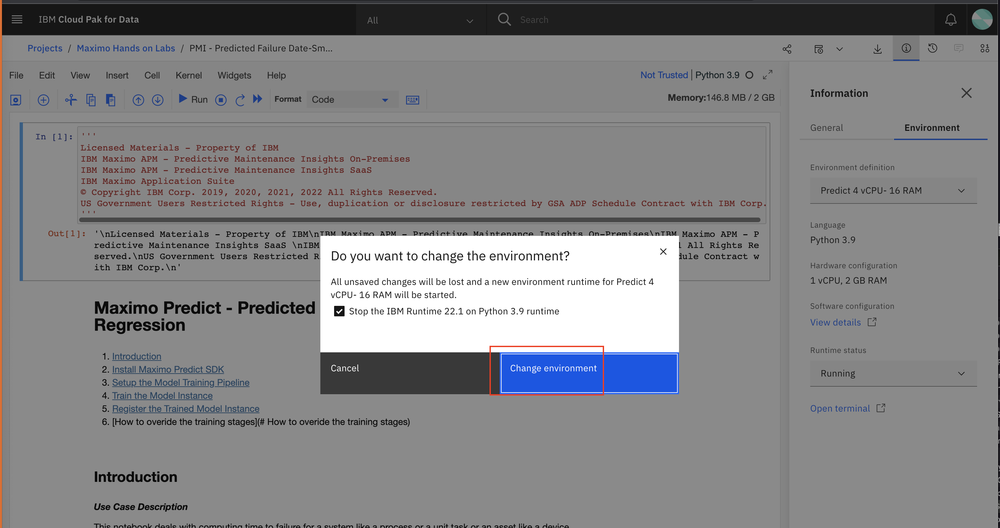
To Stop and Restart a Notebook Template in a Watson Studio Project
If your notebook environment fails to start you can restart the environment by following the steps below.
-
Add one of the Predict notebook templates to your Watson Studio Project. Click the
informationicon,environmenttab andrestartfrom theRuntime Statusselect box. 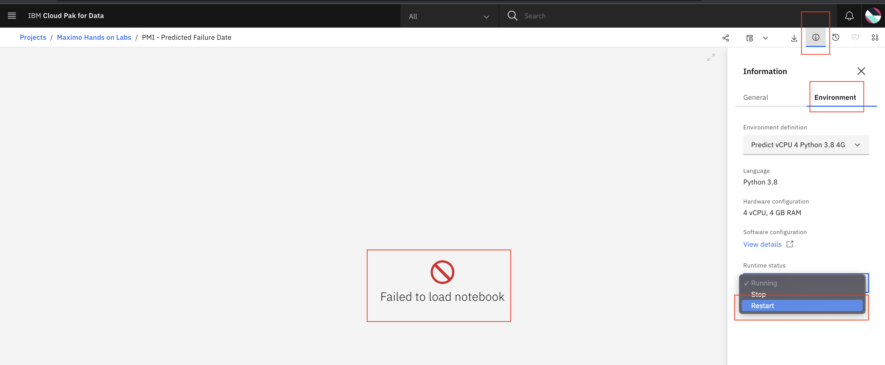 -
Confirm your selection to restart the notebook by pressing the
Changebutton.
Download Predict pmlib Python Library Documentation
Predict pmlib Python Library is used for working with Predict algorithms and automating device and data tasks in Monitor.or open the Predicted Failure Data template notebook to your Project. Use the steps from the previous exercise Add Notebook From File to a Watson Studio Project Prepend your initials to the template. If you already have uploaded the notebook, open it with Watson Studio.
- You can download the documentation using a URL similar to the one you create in the previous Exercise for downloading the
doc-8.5.1.zipthat contains the html files for thepmilibdocumentation.
For example:
https://`EXTERNAL_APM_API_BASEURL`/ibm/pmi/service/rest/ds/`APM_ID`/`APM_API_KEY`/doc/download
-
Unzip the
doc-8.5.1.zipfile you downloaded -
Click on the file
index.htmlfile you unzipped. The browser should open with the documentation below. 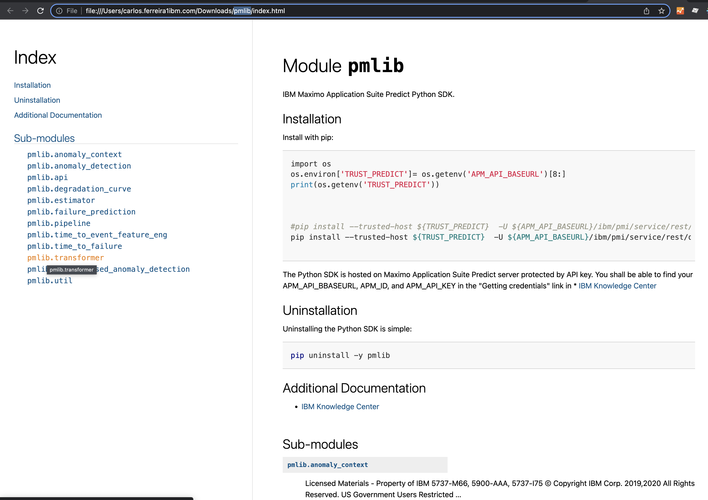
Setup Environment Variables for Predict in Notebook Templates
One of the earlier steps explained how to manually find the environment variables used in Predict to do things like download the zip file with the Predict Notebooks. When using a Predict Notebook in Watson Studio you can also programatically discover these environment variables since they are set for you in the Cloud Pack for Data Environment that was installed with Maximo Application Suite. Use the code below if it isn't already included in the notebook templates to get the required Predict environment variables.
Sample Code
import json
import os
# Try to open environment variables json file if it already exists.
try:
f = open('/project_data/data_asset/hc_Predict_Envs.json',)
except:
f = {}
print("No execution json found, initialising with current notebook information")
data = json.load(f)
f.close()
os.environ['APM_ID'] = data['APM_ID']
os.environ['APM_API_BASEURL'] = data['APM_API_BASEURL']
os.environ['APM_API_KEY'] = data['APM_API_KEY']
# README: Change to true if Health/Predict are deployed on different cluster from this CP4D environment
use_external = False
if use_external:
import os
os.environ['USER_PROVIDED_HEALTH_URL'] = data['USER_PROVIDED_HEALTH_URL']
os.environ['USER_PROVIDED_DB_CONNECTION_STRING'] = data['USER_PROVIDED_DB_CONNECTION_STRING']
os.environ['USER_PROVIDED_URL'] = data['USER_PROVIDED_URL']
import os
os.environ['SSL_VERIFY_APM'] = 'False'
os.environ['SSL_VERIFY_AS'] = 'False'
os.environ['TRUST_PREDICT'] = os.getenv('APM_API_BASEURL')[8:]
print(os.getenv('TRUST_PREDICT'))
main.predict.ivt11rel87.ivt.suite.maximo.com
import os
os.environ['TRUST_PREDICT'] = os.getenv('APM_API_BASEURL')[8:]
print(os.getenv('TRUST_PREDICT'))
PIP Install PMLib Predict in Notebook Templates
Install the Predict Python Software Develop Kit (SDK) called PMLib using pip install.
Sample Code
# Initialize the Maximo-Predict environment variables
import pmlib
from pmlib import api
api.init_environ()
Using Watson Studio Library
The Watson Studio Python Library named ibm_watson_studio_lib allows you to do to work with data assets in your project. Some examples you will learn later are reading and writing data from your project. Another example is getting the Watson Studio Project Information.
You will use a Watson Studio Python library named ibm_watson_studio_lib that is available in your environment by default to get your project information. See this API reference for more information.
Sample Code
# Get the Watson Studio Project Information
from ibm_watson_studio_lib import access_project_or_space
wslib = access_project_or_space()
project_name = wslib.here.get_name()
wslib.show(project_name)
project_id = wslib.here.get_ID()
wslib.show(project_id)
Congratulations you have seen how to upload, start and restart Predict notebook in Watson Studio. You have also learned how to download and access the pmilib documentation that you will use in the next exercises. Finally you learned how to use the ibm_watson_studio_lib to work with assets in your project.
In the next exercises you will learn how to use these notebook templates to detect anomalies and predict asset failures. You will start by update and running setup notebooks to create asset types in Health and Predict.